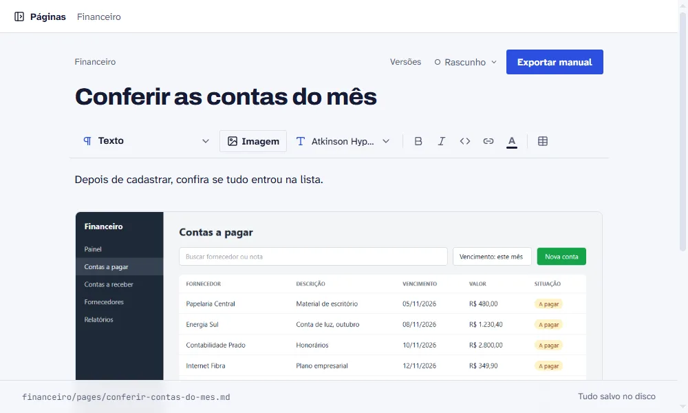

Construtor de manuais · open source
Tira o print e explica. O Explicaí monta o manual.
Construtor de manuais open source e gratuito. Cole os prints, marque a tela, escreva os passos e exporte em PDF, HTML e Markdown.
npx explicai manuais
Precisa de Node 20.12 ou mais novo. Roda na sua máquina, sem conta e sem nuvem.

Por que existe
Todo sistema precisa de manual. Quase nenhum tem um bom.
Fazer à mão leva dias: tirar print, marcar a tela, escrever cada passo, exportar. Depois a tela muda e você faz tudo de novo.
Lançar. O sistema foi para o ar e o manual ficou para a semana que vem.
Entregar. O cliente pediu o manual junto com o sistema.
Atualizar. A tela mudou e o manual continua com a tela antiga.
Como funciona
Do print ao manual, em três passos
-
1 Cole o print.
Copie a tela do seu sistema e cole na página. A imagem entra no manual.

-
2 Marque a tela.
Coloque marcadores numerados, destaques, setas e áreas clicáveis, e escreva o que a pessoa faz em cada um.

-
3 Exporte.
Gere PDF, HTML ou Markdown com um clique.

O Explicaí não captura a tela. O print vem de você.
Veja pronto
Veja um manual feito no Explicaí.
“Financeiro” é um sistema inventado para este exemplo. O manual é o HTML que o Explicaí exporta, sem edição.
Formatos
PDF para quem lê. Markdown para quem automatiza.
Cada manual é uma pasta de Markdown com as imagens, versionada no git ao lado do código. Pessoas leem o PDF ou o site em HTML. Uma IA lê os mesmos arquivos.
financeiro/
manual.json
pages/
cadastrar-conta-a-pagar.md
assets/
contas-a-pagar.png
contas-a-pagar.png.json
---
title: Cadastrar conta a pagar
---
1. Abra **Contas a pagar** no menu lateral.
2. Clique em **Nova conta**.
3. Preencha fornecedor, valor e vencimento.
Aberto e gratuito
Licença MIT, código no GitHub.
O processo de construção está no blog. Documentar um sistema não pode custar mais que construí-lo.
Perguntas rápidas
O que segura a instalação
- Preciso de conta?
- Não. O Explicaí roda em
localhoste salva numa pasta sua. - Funciona em português e em inglês?
- A interface sim. O manual fica no idioma em que você escrever os passos.
- O que preciso instalar?
- Node 20.12 ou mais novo. O resto o
npxbaixa.
Comece pelo seu primeiro manual.
npx explicai manuais